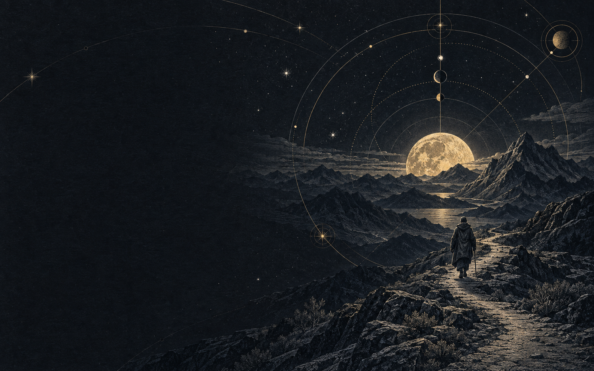

An eight-second seamless loop. The outer wheel turns up to three degrees clockwise and the secondary orbit two degrees counterclockwise, then both gently return. One existing star brightens and fades. The scenery, other stars, moon, and traveler stay still. Space pauses or resumes. The timeline lets you inspect the motion.